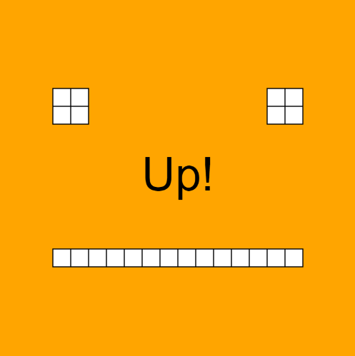

Simple experiment with Adafruit's APDS9960
Many of technology's problems, such as they are, seem to me to stem from its inherent lack of humanity. It's hard for us to wrap our minds around bytes and ones and zeroes, when our lives as lived are full of nuance and implicit communication. That's why I took an immediate shine to Adafruit's APDS9960 sensor, which is used directly to measure RGB values and indirectly to measure gesture. Gesture is such a simple, immediately understandable human activity, and for our lab this week I wanted to build something equally personable.
Impatient Friend
I feel like everyone's first instinct when tasked to draw something is to make a smiley face, so that's what I did. In p5 I set up a series of rectangles to make a blocky, pixelated face, but it still seemed a little dead to me, not in keeping with the kind of feeling I wanted to convey. So, I made the eyes blink by lowering the framerate to 5 frames per second and adding some conditionals to lower and raise the 'eyelids'. It's amazing what a simple animation like that will do. The blink animation has a .05 percent chance to start every frame, which adds a randomness which is really organic.
However, your new friend is impatient. Every so often, they will call for you to make a specific gesture (a 0.05 percent chance every frame), and they won't be very happy until you do. Fortunately, they are also easily appeased. Once you perform the correct gesture, they'll have some kind words for you -- until the next time they get impatient.
Overall, nice to play with when you're feeling too lonely.

Code can be found by clicking here. It will, of course, require an Arduino and an APDS9960 sensor to use properly.
Comments? Questions? Concerns? Email me here!